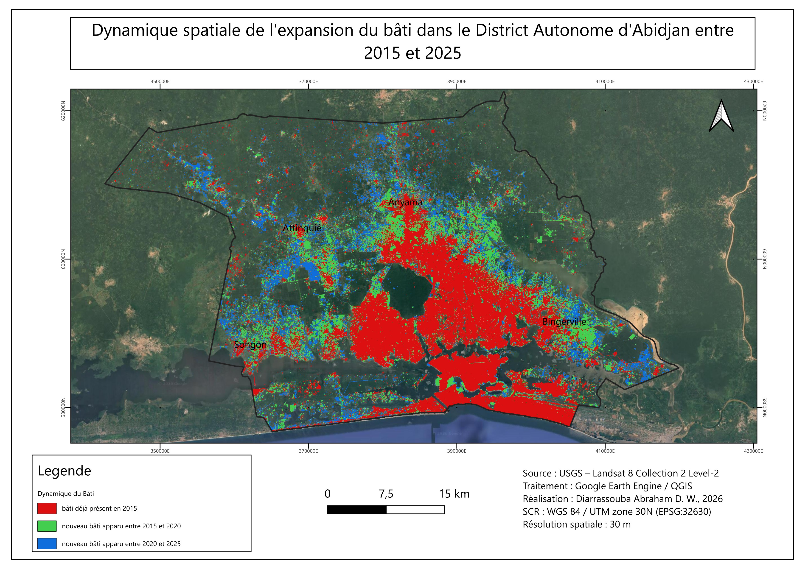

Explorer le territoire
Affichez le bâti en 2015, 2020 ou 2025 sur un fond de carte classique, gris ou satellite.
Cartographie · Télédétection · Analyse spatiale
Bienvenue sur mon espace de présentation. Je suis Diarrassouba Abraham Désiré Wilfried, spécialiste SIG et géomaticien. Je vous invite à découvrir mon projet de Master :
Par télédétection, classification Random Forest et développement d’un Web SIG d’aide à la décision.
District autonome d’Abidjan / 2015 — 2025

À propos de moi
Spécialiste SIG et géomaticien
À travers ce projet, je présente une lecture cartographique de l’évolution du bâti dans le district autonome d’Abidjan entre 2015 et 2025.
Ce WebSIG réunit des cartes issues de la classification d’images Landsat 8 et des statistiques sur les surfaces bâties. Il permet de situer le bâti existant, d’observer les nouvelles extensions et de comparer les différentes périodes.
Je vous invite à parcourir les cartes et les résultats pour découvrir les transformations du territoire.
Le projet
Affichez le bâti en 2015, 2020 ou 2025 sur un fond de carte classique, gris ou satellite.
Comparez deux années avec le curseur temporel et découvrez les trois classes de la couche d’évolution.
Retrouvez les surfaces bâties, les gains, les taux d’évolution et les indicateurs de précision des classifications.
La carte et les résultats du projet vous attendent.